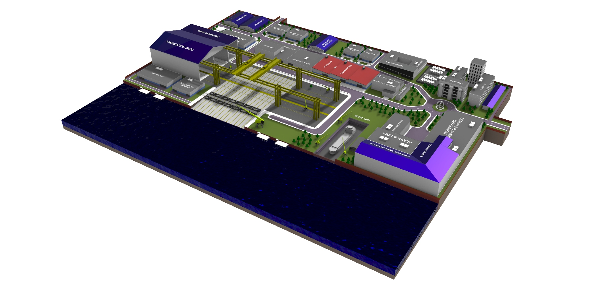
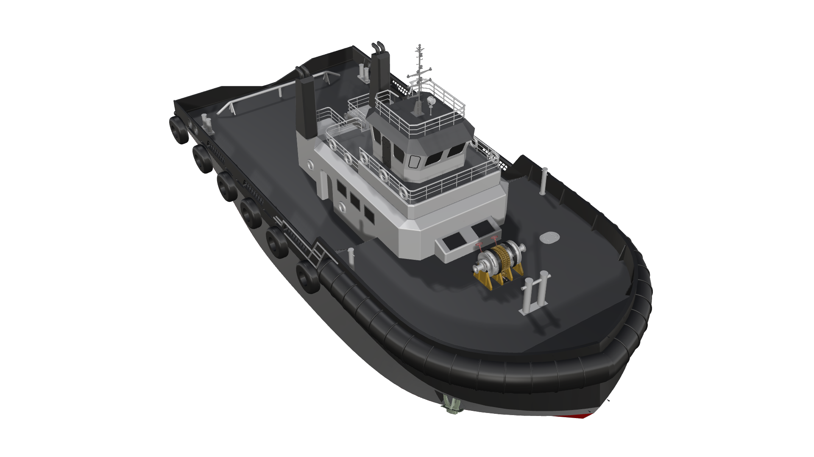

Hi, I am Md. Rokibul Hasan
I am a
A Naval Architecture and Marine Engineering graduate from MIST specializing in structural analysis, computational fluid dynamics (CFD), and parametric design. Passionate about automating ship design workflows and developing next-generation marine technologies.
About Me & Core Focus
Bridging Computational Engineering & Naval Architecture
As a graduate in Naval Architecture and Marine Engineering from the Military Institute of Science and Technology (MIST), I focus on the structural, hydrodynamic, and parametric aspects of ship design. I apply advanced computer-aided engineering (CAE) techniques to improve vessel safety and optimization.
My academic thesis explored forecastle bulwark geometry optimization using finite element analysis during collision events, while my course projects involved designing massive ocean-going LNG vessels. I also write custom parametric scripts using Grasshopper to automate hull design and lines plan development.
I am highly interested in pursuing a MSc/PhD degree or research-driven roles to continue investigating CFD, structural mechanics, and parametric ship design automation.
Core Engineering Pillars
Finite Element Analysis (FEA)
Conducting linear, non-linear, and transient structural simulations using ANSYS Mechanical and LS-Dyna to assess impact energy absorption and material stresses.
Computational Fluid Dynamics (CFD)
Analyzing ship resistance, wake distributions, and aerodynamic flows over parametric turbine blades using Ansys Fluent, Aqwa, and Star-CCM+.
Parametric Automation
Building automated modeling algorithms in Grasshopper to generate parametric ship hulls, lines plans, offset tables, and turbine geometries.
Publications & Research
Authoring peer-reviewed literature reviews examining the state of automation, CAD integration, and computational design trends in modern ship design.
Design & Fabrication Engineering
Specializing in CAD drafting, marine machinery layouts, and shipyard safety/QA construction standards. Experienced in graphic design and editorial coordination for departmental magazines.
Skills & Engineering Tools
Core Technical Expertise
Language Proficiency
Software Proficiency
Proficient in standard engineering and CAD/CAE tools for modeling, structural and hydrodynamic simulations, automation, and documentation.
Featured Engineering Projects
.png)
Numerical & Parametric Investigation of Fore Geometry Impact in Collision
Investigated forecastle bulwark geometry influences on ship-ship crossing collisions using explicit non-linear FEA solvers, evaluating penetration, force peaks, and energy dissipation.
.jpg)
Design & Analysis of a 156,000 m³ Liquified Natural Gas (LNG) Carrier
Developed hull dimensions, General Arrangement, lines plan offset tables, intact/damage stability calculations, resistance/power estimation, and 3D modeling for an LNG carrier.
.png)
Self-Developed Parametric Engineering Tools in Grasshopper
Created algorithms for generating customizable horizontal axis wind turbine blades and automating 3D hull transformations, displacement plans, and lines plans directly from offset tables.
.jpg)
Quadruped Obstacle-Detector Spider Robot
Developed a four-legged robotic spider using an Arduino microcontroller, implementing inverse kinematic calculations for limb gait coordination and ultrasonic sensors for obstacle avoidance.
.jpg)
Arduino-Controlled Automatic Firefighting Robot
Designed and built an autonomous firefighting vehicle in the Electrical & Electronics Lab during B.Sc., equipped with flame sensors, an onboard water pump, and dual autonomous/Bluetooth steering.
.png)
CFD Analysis of a Shell and Tube Heat Exchanger
Performed numerical simulations in ANSYS Fluent to evaluate structural meshing, fluid flow velocity profiles, heat transfer coefficients, and pressure drop characteristics.
My 3D Designs & Models

Comprehensive 3D Shipyard Layout & Infrastructure Model
Designed a detailed 3D CAD layout model of a modern shipyard, featuring dry docks, gantry cranes, slipways, fabrication shops, and auxiliary structural systems.

Detailed Harbor Tugboat 3D Surface & Scantling Model
Constructed a high-fidelity 3D surface model of a harbor tugboat vessel, focusing on hull shape fairing, superstructure styling, and azimuth thruster integrations.
.png)
Safe & Eco-Efficient Passenger Ferry Design
Designed an innovative passenger ferry concept for the World Ferry Design Competition, optimizing structural stability, hull form hydrodynamics, and general arrangements.
Experience & Education
Work & Activities
Internship Trainee
- Studied naval construction safety workflows and heavy steel fabrication processes.
- Gained practical knowledge in marine machinery fabrication, alignment, and quality checklists.
Director of Graphic Design
- Designed all official promotional posters, banners, and digital flyers for the annual festival.
- Coordinated layout formatting for print-ready media materials.
Co-Designer of Departmental Magazine
- Collaborated on formatting, typesetting, and illustration layout structures for the annual NAME magazine.
Education
B.Sc. in Naval Architecture & Marine Engineering
Graduated with a Cumulative GPA of 3.72 / 4.00. Awarded the MIST Dean's List Award in 2024 and 2025 for maintaining term GPAs of 3.87 and 3.85. Specialized in FEA simulations, fluid dynamics, and parametric optimization models.
Higher Secondary Certificate (Science)
Achieved a GPA of 5.00 / 5.00.
Secondary School Certificate (Science)
Achieved a GPA of 5.00 / 5.00.
Selected Publications & Academic Papers
Numerical & Parametric Investigation of Fore Geometry Impact in Collision
M. R. Hasan, "Numerical & Parametric Investigation of Fore Geometry Impact in Collision," B.Sc. Thesis, Department of Naval Architecture and Marine Engineering, Military Institute of Science and Technology (MIST), 2026.
Abstract: Evaluates structural crashworthiness and energy dissipation behavior of fore bulkhead structures in high-energy perpendicular collision scenarios. Optimized forecastle geometries successfully distributed structural loads, delaying membrane rupture and increasing energy absorption by 12%.
Developments in Parametric Modeling and Hull Form Optimization for Modern Marine Vessels: A Review
M. R. Hasan, "Developments in Parametric Modeling and Hull Form Optimization for Modern Marine Vessels: A Review," Technical Paper, NAME Department, MIST, 2025.
Abstract: Assesses state-of-the-art computational workflows using Rhinoceros, Grasshopper, and genetic algorithms to automate hull offsets generation and lines fairing. Establishes critical parameters for optimizing resistance profiles in calm and rough seas.
Certifications & Training
CAE & Analytical Certs
CFD, ML & Marine Training
Personal Gallery
.jpg)
.jpg)
.jpg)
.jpg)
Eager to Innovate and Research
I am actively seeking research assistantships, graduate study opportunities (M.S./Ph.D.), or computational engineering roles focusing on structural mechanics, fluid dynamics, and parametric automation. Let's discuss research collaborations or opportunities.